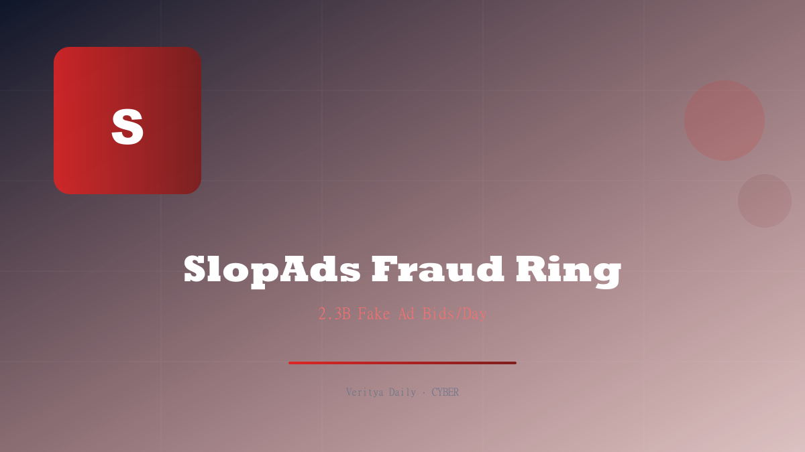

SlopAds: 224 Apps & 2.3B Fake Ad Views

Key Takeaways
- 224 Android apps with a combined 38 million downloads formed the SlopAds fraud ring
- Generated 2.3 billion fake ad bids per day across 228 countries
- Used steganography and hidden WebViews to evade detection
- Traffic came primarily from US (30%), India (10%), and Brazil (7%)
- Google has removed all 224 apps from the Play Store
- C2 server hosted AI-themed services, suggesting evolving fraud techniques
The Scale of SlopAds: By the Numbers
The SlopAds operation was breathtaking in its scale. 224 Android applications, downloaded a combined 38 million times, worked in concert to defraud advertisers across the globe. The apps generated an astonishing 2.3 billion fake ad bids per day, spread across 228 countries and territories.
To put those numbers in perspective: 2.3 billion daily fake bids means the operation was injecting falsified demand into the programmatic advertising ecosystem at a rate that could distort ad pricing across entire markets. Every fake bid competes with legitimate advertisers for inventory, inflating prices and draining budgets without delivering real human engagement.
| Metric | Value |
|---|---|
| Number of fraudulent apps | 224 |
| Total downloads | 38 million |
| Fake ad bids per day | 2.3 billion |
| Countries affected | 228 |
| US traffic share | 30% |
| India traffic share | 10% |
| Brazil traffic share | 7% |
The apps masqueraded as legitimate utilities — flashlights, QR scanners, calculators, photo editors, and games. On the surface, they functioned normally. But beneath the user interface, a sophisticated fraud engine was running continuously, generating fake ad impressions and bids even when the app wasn't actively in use.
How the Fraud Worked: Steganography and Hidden WebViews
The technical sophistication of SlopAds set it apart from typical ad fraud operations. The scheme employed two key techniques:
Steganography: The apps embedded hidden instructions within image files — typically app icons or UI assets. These steganographic payloads contained configuration data for the fraud engine, including ad placement IDs, bid parameters, and C2 server addresses. Because the data was hidden inside legitimate-looking images, security scanners that analyzed file metadata or code patterns couldn't detect the fraud instructions.
Hidden WebViews: Each app contained invisible WebView components that loaded ad content in the background. These WebViews were configured to:
- Simulate realistic user interactions (scrolling, clicking, hovering)
- Generate programmatic ad requests with spoofed user agents
- Mimic legitimate app traffic patterns to bypass fraud detection
- Operate even when the app was minimized or in the background
The combination of steganography and hidden WebViews made SlopAds nearly invisible to standard ad fraud detection. The fraud looked like real user engagement — until you dug into the packet-level data.
The C2 (command-and-control) infrastructure coordinated the fraud across all 224 apps. It distributed updated ad placement configurations, managed bid timing to avoid suspicious spikes, and collected data on successful fraud payouts. The decentralized nature of the app fleet — spread across different developer accounts and app categories — made it difficult to identify the operation as a single coordinated effort.
Geographic Distribution and Traffic Sources
The fraudulent traffic generated by SlopApps had a distinct geographic distribution:
- United States: 30% — The largest share, targeting the highest-value ad market
- India: 10% — A rapidly growing digital advertising market
- Brazil: 7% — Latin America's largest ad market
- Remaining 53%: 225 other countries — Distributed globally to avoid concentration red flags
This distribution is strategic. US ad inventory commands the highest CPMs (cost per mille), so directing 30% of fake traffic there maximizes revenue. India and Brazil represent high-growth markets where ad fraud detection may be less mature. Spreading the remaining traffic across 225 countries prevents any single market from seeing anomalous traffic spikes that might trigger investigation.
The apps also spoofed device identifiers,地理位置 data, and carrier information to make fake traffic appear as though it originated from real devices in these target regions. This level of geospoofing is increasingly common in sophisticated ad fraud operations.
The AI Connection: C2 Server Discoveries
One of the most intriguing findings from the SlopAds investigation was the discovery of AI-themed services hosted on the operation's C2 server. This suggests that the fraud operators were either:
- Using AI to generate more realistic fake user behavior patterns
- Leveraging AI to dynamically adjust bidding strategies based on market conditions
- Creating AI-themed front services to launder fraud proceeds
- Developing AI-powered tools to evade ad fraud detection systems
The presence of AI services on the C2 server represents an alarming evolution in ad fraud. Traditional fraud detection systems look for patterns — repetitive behaviors, unrealistic click rates, suspicious IP concentrations. AI-driven fraud can adapt in real-time, learning what detection systems look for and actively evading them.
This mirrors the broader trend in cybersecurity: just as defenders use AI to detect threats, attackers use AI to evade detection. The SlopAds operation appears to be an early example of AI-augmented ad fraud at industrial scale.
Google's Response and App Removal
Upon notification from security researchers, Google removed all 224 apps from the Google Play Store. The company also initiated account-level actions against the developers associated with these apps, preventing them from publishing new applications.
However, the removal from the Play Store doesn't address the millions of devices that already had the apps installed. Users who downloaded SlopAds-infected apps continue to generate fraudulent ad bids unless they manually uninstall the applications. Google Play Protect has been updated to flag and remove the apps from existing installations, but coverage isn't universal.
The takedown also raises questions about Google's app review process. How did 224 fraudulent apps with 38 million combined downloads pass Google's security review? The steganographic technique used by SlopAds was specifically designed to evade automated analysis, but the sheer scale of the operation suggests that current app review mechanisms have significant blind spots.
What This Means for the Ad Tech Ecosystem
The SlopAds operation exposes fundamental weaknesses in the programmatic advertising ecosystem:
1. Bid flooding works. By generating 2.3 billion bids per day, SlopAds overwhelmed fraud detection systems with volume. Even a 99% detection rate would still let 23 million fraudulent bids through daily.
2. Steganography defeats static analysis. Hiding fraud instructions in image files bypasses code-level app reviews. Ad tech platforms need image-aware detection systems.
3. AI is a double-edged sword. The AI services on the C2 server suggest fraud operators are already using machine learning to optimize their attacks. The ad tech industry needs AI-powered defense to match.
4. App store review needs an overhaul. 224 apps with 38 million downloads represents a systemic failure. Google and Apple need more sophisticated dynamic analysis that runs apps in sandboxed environments and monitors network behavior.
Ad fraud is projected to cost the global advertising industry over $80 billion in 2026. Operations like SlopAds show why — the technology to fight fraud hasn't kept pace with the technology to commit it.
What Advertisers Should Do
- Use ads.txt and sellers.json: Ensure you're only buying from authorized sellers
- Deploy pre-bid filtering: Use third-party fraud detection before bidding on inventory
- Monitor bid patterns: Look for unusual bid density from specific app bundles or domains
- Audit mobile app spend: Review which apps your ads appear on and flag low-quality inventory
- Demand transparency: Require SSPs and DSPs to provide detailed placement data
- Consider contextual targeting: Move away from purely behavioral targeting, which is more easily faked
SlopAds is a wake-up call for the entire programmatic advertising supply chain. The combination of steganography, hidden WebViews, AI augmentation, and massive scale represents the new frontier of ad fraud. Defenders need to evolve their detection capabilities — or watch billions of advertising dollars continue to flow to fraudsters.